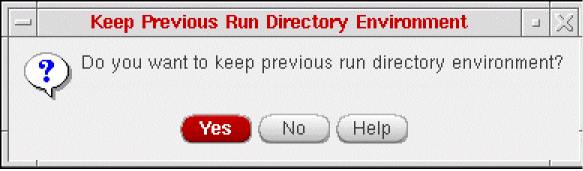
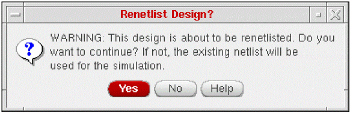

3
Setting Up the Simulation Environment
This chapter describes how to set up the NC-Verilog Integration Environment for a simulation.
- Simulation Process Flowchart
- Selecting a Design
- Initializing a Design
- Netlisting a Design
- Creating Stimulus Template File
Simulation Process Flowchart
You can develop designs using Virtuoso Schematic Editor for schematics, and Virtuoso Text Editor for text cellviews. You can also use other Virtuoso tools, such as VHDL Import, to include cellviews for your designs.
cdsTextTo5x command. This command also lets you generate the symbol views of the imported cellviews. For details, see Importing Design Data by Using cdsTextTo5x. You can also use this command to create text cellviews (5x structure), symbol views, and shadow database for SPICE, Spectre, DSPF, and PSpice.Selecting a Design
The process of selecting a design includes setting up your run directory and specifying the top level library, cell and the view names. You can specify this information in the main NC-Verilog window.
For more information on entering run directory name and top level design, refer to Run Directory.
Initializing a Design
To initialize a design, you can either use the Initialize design from Fixed Menu or select the Initialize design command from the Commands Menu in the main NC-Verilog window. Selecting this command initializes the specified run directory for netlisting and simulation after performing a set of checks on the run directory and the design. Following are the possible outcomes:
-
If the specified run directory already exists, then the system loads
.vlogifrcthat exists in that directory. -
If the specified run directory does not exist, then the system loads the
$HOME/ .vlogifrc. In case no.vlogifrcexists, then the default settings are used. -
If you have netlisted and/or simulated in one run directory and then selected a new run directory, a dialog box prompts you to confirm if you want to use the previous run directory settings.
 - If you want to re-use an existing run directory and change the top level library or cell or view name, a dialog box is displayed that informs you that the run directory specified had been used for a different design and whether you would want to use the same run directory for the specified design.
Netlist, Simulate, Edit TestFixture and Simulation Compare commands would be enabled. If the run directory does not contain a netlist, then the Generate Netlist and Simulation Compare commands would be enabled.Netlisting a Design
Netlisting produces a Verilog text description of your design. The Verilog text description (the netlist) serves as the input for the NC-Verilog simulator. This section describes how to
Specify Netlisting Options
The Netlist Setup form lets you specify netlisting options before the simulator generates the netlist. To display the Netlist Setup form, select the Netlist command from the Setup Menu on the main NC-Verilog window.
The table below shows which options you set for specific netlisting tasks.
Mapping Tasks to Options
For more information on specifying the netlisting options, see Netlist.
Run Hierarchical Netlister
To generate an incremental hierarchical netlist in the specified run directory, you select either the Generate Netlist option from the Commands Menu or Generate Netlist option from the Fixed Menu.
The next action depends on how the Netlisting Mode option on the Netlist Setup form has been specified. (See Specify Netlisting Options for more information about the Netlist Setup form.)
- If the Netlisting Mode option on the Netlist Setup form is disabled, and if the run directory already contains the netlist for the selected design, the Simulate command will be available in the Commands Menu and in the Fixed Menu so that you can proceed with simulating the design.
-
If the Netlisting Mode option on the Netlist Setup form is enabled, and if no netlisting setup has been changed since the design was netlisted successfully, a dialog box appears, asking if you want to re-netlist the design or use the existing netlist for simulation.
If you click Yes, the simulator re-netlists the design. If you click No, the existing netlist is used to compile the design.
After successfully netlisting the design, the simulation specific menu commands that are still not available will be available.
Creating Stimulus Template File
By default, the system automatically creates the stimulus template file the first time you netlist your design in a new run directory. The default stimulus file, called testfixture.verilog, contains preinitialized signal settings that drive a simulation. This default operation is controlled by the Generate Test Fixture Template option on the
Netlist Setup form.
You can edit the test fixture file using the Edit Test Fixture form. It can be accessed from the Commands Menu. This form gives you an option to either select the default stimulus file or test bench or specify another stimulus or test bench file location. You can also edit the existing test fixture using an editor. For more information on editing test fixture, refer to Edit Test Fixture option under Commands Menu.
For more information on stimulus and test fixtures, refer to Chapter 6, “Working with the Stimulus” .
Return to top